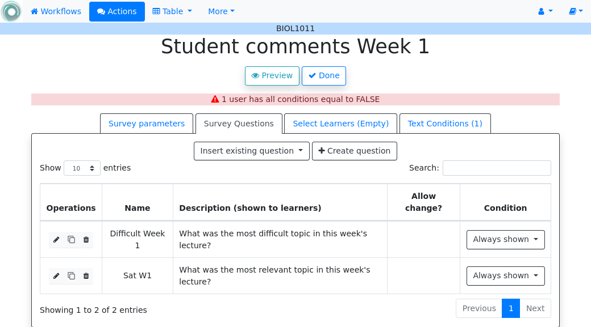

3.4. Actions¶
“In order to carry a positive action we must develop here a positive vision” – Dalai Lama
This is the most important functionality of the platform. Actions are used exchange information with the learners or other platforms, either through personalized information, or requesting data through a survey. A workflow contains a set of actions shown when selecting Actions page in the top-bar menu. The next figure shows an example of the actions available in one workflow.

The buttons at the top of the page offer the following operations:
- Action
Create a new action in the workflow. The form requires a name (unique for the current workflow), a description (optional), and the type of action. OnTask offers the following types of actions: personalized text, personalized Canvas email, personalized JSON, and surveys.
- Import actions
Upload an action previously downloaded from another workflow.
- Export actions
Download a file with any of the actions in the workflow.
- Timeline
Display the time line showing when the actions in the workflow have been executed.
The actions in the workflow are shown in a tabular format. For each action the following main operations are offered:
- Edit
Edit the content of the action
- Run
Use the action to either provide personalized content or run a survey (see Running actions for more information)
- Preview
See the content of the action when considered for each user (if applicable)
- URL
Provide access to learners to the content of the action through a link (only available for actions of type Personalized Text)
- ZIP
Download a ZIP file with as many files as selected learners in the action. Each file contains the personalized document for the learner (only available for Personalized Text actions)
- Timeline
See when the action has been executed
- Schedule
Schedule the execution of the action for some time in the future
- Rename
Edit the name and description of the action.
- Clone
Create an exact duplicate of the action adding the prefix “Copy_of” to its name.
- Export
Download a file containing the definition of the action suitable to be uploaded into another workflow.
- Delete
Remove the action from the workflow.
3.4.1. Personalized Text¶
These actions allow to create a document (similar to a HTML page) and mark elements (paragraphs, sentences, images) with conditions that will control if they are included or ignored when showing the document. The conditions are stated in terms of the columns of the data table. Think of this personalized content as a resource (message, tip, comment) you would offer learners but with content that is different depending on the data stored in the table. You may have several of these actions prepared to be used at different points during a learning experience. The personalized text action is manipulated with the screen shown in the following figure:

The screen has three tabs: the left one contains the editor, the center one the definition of a filter (optional) to select a subset of the learners to consider for this action, and the right tab contains the conditions used in the text (if any).
- The Personalized Text HTML Editor (left tab)
This is a conventional HTML editor offering the usual operations (inserting text, headings, lists, links, images, etc.) Right above the editor window you have three pull down menus to: insert a column value in the text (a placeholder), use a condition to conditionally show the text currently highlighted, or insert a workflow attribute that will be replaced by the corresponding value.
- The filter
The center tab shows a filter. This element is an expression used to decide which learners (or more precisely, the corresponding rows in the data table that) will be selected and used in this action.

The filter element shows the name, description, and the formula defined. The icons at the bottom of the object provide access to the following operations:
- Edit
Edit the name, description, and formula of the filter.
- Delete
Remove the filter from the action.
When editing or creating a filter, the form shows the information as in the following figure:

The expression in this condition is shown under the title The learner will be selected if and can be read as:
Video_1_W4 = 0 or Video_2_W4 = 0
The first element of the expression is the sub-expression
Video_1_W4 = 0which contains the variableVideo_1_W4, the equal sign, and the constant zero. The second element is a sub-expression with the variableVideo_2_W4, the equal sign, and the constant 0. These two sub-expressions are connected through the OR operator, which means that the expression will be True if either of the sub-expressions are True, and False in any other case. When evaluating this expression, the variables are replaced by concrete values (numbers). For example, ifVideo_1_W4is replaced by 3, andVideo_2_W4is replaced by 4, the evaluation will transform the expression into \(3 = 0 or 4 = 0\). The sub-expression \(3 = 0\) is clearly False and so is the other sub-expression \(4 = 0\). This means the initial expression is False. result is either True or False. Another possible evaluation is ifVideo_1_W4is equal to zero (andVideo_2_W4remains equal to 4). In this case the resulting expression is \(0 = 0 or 4 = 0\). In this case, the first sub-expression is True, and although the second is False, only one is needed for the overall expression to be True.These conditions can have nested sub-expressions and get complex fairly quickly. However, the underlying mechanism to evaluate them remains the same: replace variables with values and decide the result (True or False).
- Text conditions
The right tab contains the text conditions. A condition is an expression that when evaluated with respect to the values in the table for each learner will either be True or False. These expressions are commonly used in other applications such as spreadsheets. The following screen shows an example of the content of this tab with two conditions.

The button Condition at the top of the tab opens the form to define a new condition. Once created The buttons in the screen allow you to edit the expression, insert the condition to control the appearance of text in the editor (below), clone the condition, or delete it from the action. The button Clone other conditions creates a duplicate of a condition used in any other action. The button Column statistics allows to select a column and show a statistical summary of its values.
Each condition shows the number of learners for which the expression in that condition evaluates to True (if this value is zero, it means that any text you include in the editor controlled by this condition will not appear for any of the learners), the name, description, and the defined formula.
The icons in the bottom of the condition element allow the following operations:
- Edit
Open a form to edit the name, description and expression in a condition.
- Clone
Create an exact duplicate of this condition with the prefix “Copy_of” added to its name. This operation is useful when creating a new condition with an expression very similar to an existing one.
- Delete
Delete the condition from this action.
The following image shows an example of this condition.

The expression in the previous condition is shown under the title The text will be shown if and can be read as:
Correct_1_W4 equal to zero
The first element is the column name
Correct_1_W4, followed by the equal sign, and then the constant zero. When evaluating this expression, the column name is replaced by the value from the corresponding to each learner. For example, if a given learner hasCorrect_1_W4equal to 3 the evaluation will transform the expression into \(3 = 0\) which is False. Another possible evaluation is if another learner hasCorrect_1_W4equal to zero. After substitution of the column by the values for the learner, the resulting expression is \(0 = 0\). In this case, the expression is True. Once defined this condition can be applied to a part of the personalized text. When creating the texts, the condition is evaluated with the values for each student. If the expression is true, the text is included, if not, it is ignored. This mechanism is at the heart of how OnTask personalizes the content of the actions. In the example above, the expression in the condition one of the learners in the data table.
The buttons at the top of the page offer the following operations:
- Preview
The Preview button shows how the text in the editor is shown for those learners selected by the filter (if any). After clicking in the button you will see a window with the resulting text. If there are any elements in the text that are controlled by any condition, the bottom area will show their values.

Use the arrow buttons to see all the different versions of the text depending on the values stored in the table for each learner.
- Save
This button saves the content of the text editor and continues in the same editor page.
- Close
This button saves the content of the text editor and returns to the page showing all the actions in the workflow.
3.4.1.1. Using column values, attributes and conditions in a Personalized Text¶
As previously described the Personalized Text Editor may include three per-learner personalized elements: an attribute name, a column name or a portion of text marked with a condition.
- Attributes
Attributes are simply synonyms that you may want to use in more than one action. For example, if you have several actions that include the name of a course, instead of including that name if all actions, you may define an attribute with name course name and value Biology 101 and include in the actions the attribute name. OnTask will replace that attribute with its value when showing the text to the learners. If you then change the name of the course (or you export this workflow and import it to be used in another course), you only need to change the attribute and the name of the course will appear correctly in all actions (in what is called a single point of change).
To insert an attribute name in the text simply place the cursor in the editor where you want the value of that attribute to appear and select the attribute from the area above the editor. The name of the attribute will be inserted in the text surrounded by double curly braces, (for example
{{ course_name }}. Only the attributes you previously created in the details page are available.- Column names
The other element that can be personalized is a column name. For example, suppose you have a column in your table with the first name of the learners. You can use the column name to personalize the greeting in the text. To insert a column name, you follow the same steps used for the attribute but this time you select the column name from the pull-down menu. You will see that the name of the column appears in the text also surrounded by double curly braces (for example
Hi {{ GivenName }}. The double curly braces is the way OnTask has to mark that text to be personalized or replaced by the corresponding value for each learner extracted from the data table.- Conditional text
Using a condition to control if a portion of the text is shown or ignored is slightly different. You need to first highlight the text you want to appear depending on the condition in the editor. Then click on the pull down menu Use condition in highlighted text and select the condition to use. The text will be surrounded by two marks. For example if the condition name is
No Video 1, the text you highlighted will appear in the editor after clicking in the Insert in text as:{% if No Video 1 %}You need to review his week's video{% endif %}
This format marks the message You need to review this week’s video to appear only for those learners for which the condition
No Video 1evaluates to True with their current values in the data table. Otherwise, the text will be ignored. The following figure illustrates this process.
3.4.2. Personalized Rubric Feedback¶
These actions are a special case of the personalized text where an email template is combined with a rubric to provide learners with a set of comments based on the obtained scores. A rubric is a two dimensional table. Each row is a criterion used for assessment (for example, when using a rubric to grade a presentation, one criterion could be the clarith with which concepts have been presented. The columns of the table are levels of attainment that specify how well was the criterion addressed. In each cell of this two-dimensional table there is a paragraph describing the elements of the corresponding criterion and level of attainment.
OnTask extends the structure of each cell and complements the description with an additional text that is called the feedback. Once the table has been populated (multiple criteria and multiple levels of attainment), an email template can be created in which the appropriate feedback elements are selected based on the values of each criteria for each learner.
The first step to create a personalized rubric feedback action is, as with the previous action, to click on the button to add an action and select the option Rubric feedback.
The personalized rubric feedback action is created and modified using the screen shown in the following figure:
Three tabs are available in this screen. From left to right, the first one is the personalized text editor. It offers the same functionality as described for the personalized text action <personalized_content> with the difference that the only personalized content allowed is the comments extracted from the rubric. Place the cursor in the location in the email and click the buttom Insert rubric text to insert the mark that will be replaced by the rubric text.
The second tab is identical to the one in the personalized text action to select a subset of learners to consider for this action. The right-most tab is where the rubric table is manipulated. The criteria in the rubric are either already existing columns with a common set of pre-defined values, or you can create the criteria specifying these values. The following figure shows an example of rubric with two criteria (Presentation and Structure) and each of them with three levels of attainment (High, Medium and Poor).

As it can be seen in the figure, each criterion (row) has a left-most cell explaining what is considered, and then three additional cells (one per level of attainment) with the description of what is expected for that level, and the text to be provided as feedback. The buttons at the top of the rubric allow you to create new criteria (or columns within your workflow) or to edit the text used for the level of attainment.
The Preview button at the top of the page allows you to see the different messages generated when the rubric is evaluated based on the values of the criteria for each student. This is the text as it will be included in an email message, or made available through an URL.
Once you have selected a set of columns as criteria in the rubric with identical pre-defined values, these should not change, otherwise, the content of rubric becomes inconsistent and cannot be used.
3.4.3. Surveys¶
The personalized text actions described in the previous section make information available to the learners. The survey actions perform the operation in the opposite direction, they collect information from the learners and store it in the table. In a learning context a survey can be used by the learners to submit certain data, or by the instructor to collect annotations about learners throughout the experience. OnTask supports these two modalities. Survey actions are edited with a page with four tabs as shown in the following figure.

The information collected for each question will be represented in the table by a column. The editor page allows you to use any of the existing questions to be included in a survey. The three tabs in the screen offer the following functionality.
- Survey parameters
This tab shows the additional parameters to deploy the survey. More precisely the screen allows to define the text that is shown at the top of the survey (Survey description), the key column used to identify the users, and if the questions should be shown in different order for each user.
- Survey Questions
This tab shows the questions that are contained in the survey. The two buttons at the top of the screen allow you to either insert an existing question (the pull-down menu will show all the column names available in the table) or create a new question. When creating a new question, the following form is used:
The field Question name will be used internally as the column name in the table. The Description field is the text shown to the learners next to the question. If the question includes a set of values allowed, the form available to the students will collect the answers using a pull-down menu with the given choices.
Once a question has been defined, its inclusion in the survey can be controlled using a condition defined in the Conditions tab. The pull down menu to the right of the question description allows to select the condition.
As with other tables in OnTask, if the number of elements (in this case questions) is too large, they will be divided into pages with a link to access each page, and the content of the questions is searchable.
- Select Learners
This tab is identical to the filter in the personalized text action. The tab allows to include an expression to decide if a learner is included or not in the survey. This survey has no filter defined.
- Conditions
This tab allows the definition of conditions identical to the text condition tab in the personalized text actions. The conditions can then be attached to the questions to decide if they are present or not in the survey.
The Preview button at the bottom of the page shows the content as it will be shown to the learners.
3.4.4. Personalized JSON Object¶
This type of action allows the creation of a JSON object with content that is personalized with the same functionality as described in the section about Personalized Content. The difference is that instead of creating a text, the action creates a JSON object that will eventually be sent to another platform for further processing. This object is also a resource that is different for every student but the difference is that instead of being prepared to be visualized, it is packaged with a structure suitable to be received by another platform through a URL.
The screen to create a Personalized JSON object is shown in the following figure.

The tabs have the same functionality than in the case of personalized text.
- Text
This tab contains a plain text editor to describe the structure of the object and insert column values, attribute values or use conditions to control the presence of elements in the object.
- Select Learners
This tab allows the definition of an expression to select a subset of rows in the table for processing.
- Text Conditions
This tab contains the conditions that can be used within the body of the JSON object to select content (in exactly the same way as in the personalized text).
The text shown in the previous figure defines a JSON object with three fields sid, midterm_total and msg. The first two contain column names that will be replaced by their corresponding values. The field msg will include one of the two messages depending on the value of the conditions.
The field Target URL is to introduce the URL where the object will be sent.
The preview button in the personalized JSON action shows the resulting object after verifying that the structure after evaluating the corresponding expressions is a valid JSON object.
3.4.5. Send a data report in Email¶
This type of action sends a single email with data in a subset of columns in the workflow. Creating these actions is almost identical to creating a Personalized Text, action with the difference it is not possible to use conditions (there is a single email), and the columns are included as a table with values. The email can also include as attachment the data selected by (previously created) Table Views. The action is created selecting the corresponding action type as shown in the following figure.
The page to edit this action is similar to the one to edit a Personalized Text action with three tabs: Text, Select Learners and Attachments. In the Text tab, when you select a subset of columns from the pull down menu Insert Table, a placeholder is inserted in the text. The following figure shows the resulting text with the inclusion of the data in the email, Surname and GivenName columns.
In addition, the single email sent by this action can have as attachment any of the table subsets defined by the Table Views. The Attachments tab in the screen shows the table views currently selected as well as the button Select Attachment with the table views available (if any). The following figure shows the attachment selected for the given example.
Using the Preview button shows how the message is created by replacing the placeholder with the table with the values in those columns. The following figure shows the result for the previous example.
3.4.6. Send Column data as Report in JSON¶
This type of action sends a JSON object with data in some of the columns in the workflow to a pre-defined third party platform through a URL. Creating these actions is almost identical to creating a Personalized JSON content, action with the difference it is not possible to use conditions (there is a single object sent), and including a column in the object means including a list with its values. The action is created selecting the corresponding action type as shown in the following figure.
The page to edit this action is similar to the one to edit a Personalized JSON content but only two tabs are present: Text and Select Learners. In the Text tab, when you select one column from the pull down menu Insert Table, a placeholder is inserted in the object. The following figure shows the resulting object with the inclusion of the data in the SID and email columns.
Using the Preview button shows how the object is created by replacing the placeholder with the lists of values in those columns. The following figure shows the result for the previous example.
3.4.7. Personalized Canvas Email¶
This type of action is only available if OnTask is appropriately configured to communicate with a Canvas Learning Management System. The creation of this type of action is almost identical to the Personalized Text. The action is created selecting the corresponding action type as shown in the following figure.

The page to edit this action is almost identical to the one to edit a Personalized Text actin.
It contains three tabs: Personalized Canvas Email, Text Conditions and Select Learners. The last two, Conditions and Select Learners offer the same functionality. The Personalized Canvas Email allows the creation of a plain text message (no HTML markup is allowed).

{kind=link}
{kind=link}
{kind=link}
{kind=link}
{kind=link}
{kind=link}
{kind=link}
{kind=link}
{kind=link}
{kind=link}
{kind=link}
{kind=link}
{kind=link}